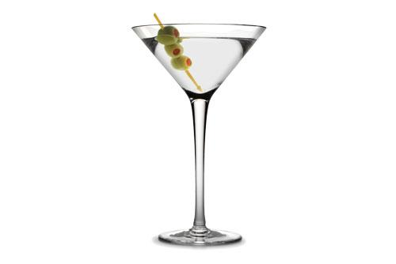

Instructions
|  |
Into a mixing glass, toss a handful of ice cubes (about half a dozen), then pour in the Gin and the Vermouth.Stir well. Some may prefer shaken!Strain and pour into a martini glass.To finish, either drop a green olive into the bottom of the martini glass OR arrange a twist of lemon peel on the edge of the martini glass.